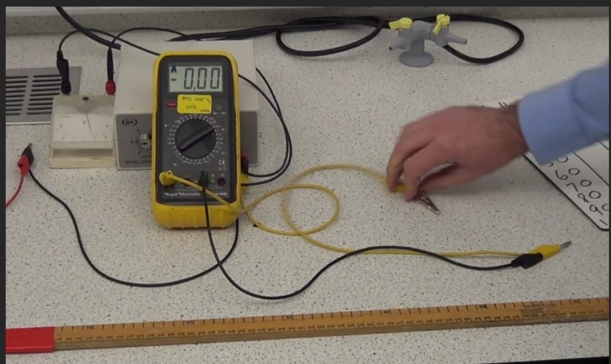

Sep 09, 2026 | 966 words | 10 min read
7.3.2. Hardware System - Neural Networks#
Design Challenge#
To build your interactive Tic-Tac-Toe exhibit, you must design the physical hardware system. The exhibit must receive enough power to operate, but not so much power that the components burn out. You will use machine learning to predict the resistance of the wiring based on its length.
Task 4: System Block Diagram#
The first step is to engage in problem decomposition by breaking the hardware system down into smaller pieces.
Instructions#
Work with your team to draft a block diagram of your physical system.
Your diagram must include:
four (4) screens,
four (4) ways for museum-goers to interact with the screens,
four (4) computer chips to run the algorithm,
a power source, and
wiring.
Save this diagram to submit as a PDF.
Task 5: Machine Learning Using a Neural Network#

Fig. 7.2 A laboratory setup for measuring the electrical resistance of various lengths of copper wire. A hand adjusts the alligator clip along the yellow wire while the meter stick below measures the length of wire in the circuit.#
The total electrical resistance of your system depends directly on the length of wire used. You conducted a physical test on the specific copper wire planned for the exhibit, gathering the measurements shown in {numref}wire-resistance-table. You will use this experimental data to train your machine learning models.
Instructions#
Open the Neural Network Resistance Excel File.
Setting Up the Neural Network#
To train the neural network, we need to begin by estimating the value for the weight and bias. Open the “Neural Network” tab.
Estimate the initial parameters by entering a weight of \(0.5\) in cell
A18and a bias of \(1\) in cellB18.Set the learning rate to \(1\) in cell
C14.Input the lengths of wire from Table 7.1 into cells
D18throughD27using absolute cell referencing (from cellsB3:B12on the “Data” tab).
Length (cm) |
Resistance (Ohms) |
|---|---|
5 |
1.44 |
10 |
2.87 |
15 |
2.81 |
20 |
4.25 |
25 |
8.68 |
30 |
7.12 |
35 |
10.06 |
40 |
12.99 |
45 |
14.43 |
50 |
14.37 |
Compute the weighted sum (\(z_1\)) in your spreadsheet using the formula \(z_1 = w_1 \cdot x_1 + b_1 \)
Because you are predicting a real number, set the activation (\(a_1\)) equal to \(z_1\). Cells
F18:F27should matchE18:E27.Compute the cost function in your spreadsheet using the formula \(C_{w,b} = (y_i - a_{1,i})^2\). Then calculate the sum of the cost function for all training data in cell
G28.
Training via Gradient Descent#
Next, you must calculate the gradient for both the weight and the bias to determine how they need to change. To calculate the gradient, you would need to compute the derivative of the cost function with respect to both \(w\) and \(b\) using partial derivatives. These derivatives have been calculated for you below.
Next, your team must calculate the gradient for both the weight and the bias to determine how they need to change. To calculate the gradient, you would need to compute the derivative of the cost function with respect to both \(w\) and \(b\) using partial derivatives. These derivatives have been calculated for you below.
Where:
In cells
H18-H27, compute \(\frac{\delta C}{\delta a}\) using absolute and relative cell referencing.Example:
H18 = 2*(E18-$C$3)In cells
I18-I27, compute \(\frac{\delta a}{\delta z}\) using absolute and relative cell referencing.Example:
I18 = EXP(E18)/(1+EXP(E18))^2Compute \(\frac{\delta z}{\delta b}\) in cells
J18:J27and \(\frac{\delta z}{\delta w}\) in cellsK18:K27using the formulas above.Compute the gradient for each input \(\Delta b\) in cells
L18-L27. Use absolute and relative cell referencing.Compute the mean gradient \(\Delta b\) in cell
L28.Compute the gradient for each input \(\Delta w\) in cells
M18-M27. Use absolute and relative cell referencing.Compute the mean gradient \(\Delta w\) in cell
M28.
Tuning via Backpropagation#
In “Step 1” of the worksheet, we will use backpropagation to train the neural network using our data.
In cell
A33, compute the new Bias by adding the old Bias (cellA18) to the gradient \(\Delta b\) (cellL28).In cell
B33, compute the new Weight by adding the old Weight (cellB18) to the gradient \(\Delta w\) (cellM28).
The remaining training steps (2-20) in the worksheet are already set up to update automatically. To manually add more training steps, copy and paste the existing rows and verify that all cell references update correctly.
Back Propagation
For more information on backpropagation, review the PCMs: Neural Networks
Task 6: Machine Learning using a General Linear Model#
To predict future data, we can use several different types of machine learning. Rather than using a neural network, you can also use a General Linear Model (GLM) to directly calculate the slope and y-intercept using the Least-Squares Method. To determine the equation of the line, you must find the slope and intercept values that minimize the prediction error, which is also known as the cost function or sum of squared errors (SSE).
Because there is more than one unknown (slope and y-intercept), partial derivatives will need to be used. This is done below.
Through algebraic manipulation, the following two equations are used to directly calculate the line of best fit with the lowest SSE.
These equations are already programmed into Excel as built-in functions =SLOPE() and
=INTERCEPT().
Linear Regression Calculations
For more information on linear regression, least-squares method, and SSE calculations, and Excel built-in functions review the PCMs: Linear Regression
Instructions#
Navigate to the “General Linear Model” tab in your spreadsheet.
Use Excel’s built-in functions
=SLOPE()and=INTERCEPT()in cellsC16andC17to calculate the parameters.In column
D, use absolute and relative cell referencing to calculate the predicted values \(f(x_i)\) for the resistance of the \(6 \ mm^2\) diameter copper wire at different lengths.Calculate the square error in column
Eusing the formula \(e^2_i = (f(x_i)-y_i)^2\).Calculate the sum of squared errors (SSE) in cell
H3by summing the square errors in columnE.Quick check: This value should be identical to the cost function of the neural network.
Create a scatter plot of the wire length and resistance data. Insert a trend line and display the equation on the figure. Make sure to format the figure for technical presentation.
Final Deliverables#
Complete your own analysis and submit your own responses for the report.
Design Challenge Individual Report: Complete this document independently, which must include:
Your name and section number.
Task 1: Your pseudocode flowchart image.
Tasks 2 and 3: Your reflection on the decision tree algorithm optimization.
Task 4: Your physical system block diagram image.
Tasks 5 and 6: Your responses to all machine learning interpretation questions, as well as your formatted GLM scatter plot.
Decision Tree Excel File: Your completed
7.3.1_Decision_Tree_Template.xlsxfile.Neural Network Excel File: Your completed
7.3.2_Neural_Network_Template.xlsxfile.